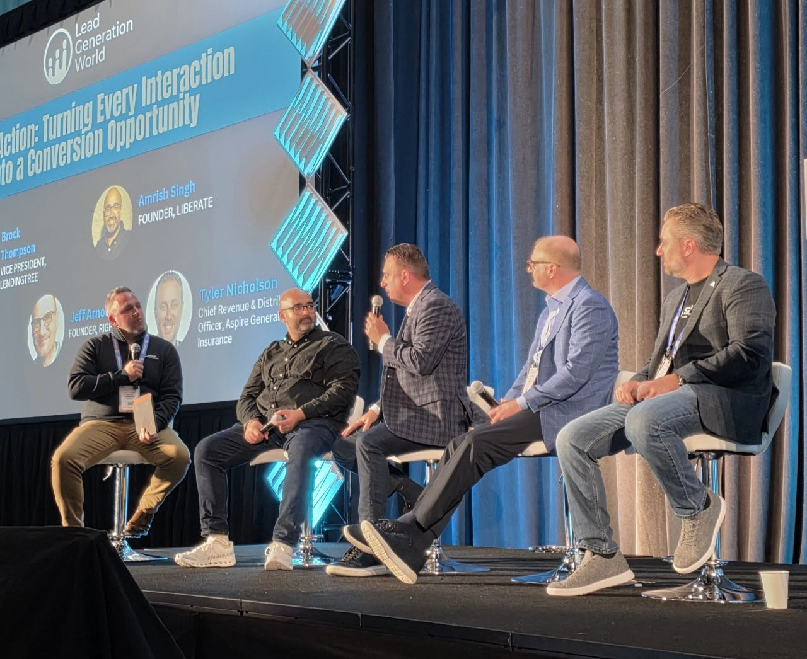

Kickstarting 2026 on the Big Stage at Lead Generation World!
On January 5th, I had the privilege of taking the stage at Lead Generation World, the industry's premier conference in San Diego. I joined a distinguished panel of leaders including Brock Thompson (LendingTree), Amrish Singh (Liberate), Jeff Arnold (Rightsure), and Tyler Nicholson (Aspire General) to discuss the transformative power of AI.
Our conversation focused on how we are leveraging AI to evolve inbound and outbound campaigns into smarter, faster, and more profitable systems. It was an incredible opportunity to share our vision for the future of the industry!
